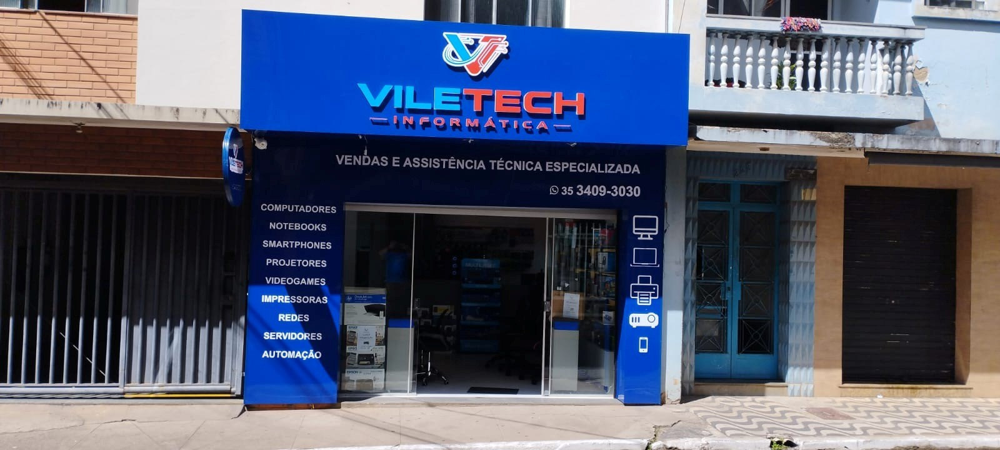

Assistência técnica
Assistência Técnica em Lavras
A VILETECH Informática atende notebooks, computadores, impressoras e projetores na Rua Barão do Rio Branco, 211, Centro de Lavras. Diagnóstico na bancada, orçamento por escrito antes de qualquer serviço e peças disponíveis na loja.
O que resolvemos
Assistência técnica para o seu equipamento
Atendemos os principais problemas de notebooks, computadores, impressoras e projetores — com diagnóstico e orçamento antes de qualquer serviço, sem compromisso de fechar.
- Notebooks — limpeza, troca de tela, teclado e bateria
- Computadores — montagem, upgrade e manutenção
- Impressoras — diagnóstico, manutenção e suprimentos
- Projetores — diagnóstico e manutenção
- Redes e Wi-Fi — instalação e configuração
- Formatação e backup de arquivos
Como funciona
Diagnóstico, peça, instalação e teste
O mesmo processo transparente da assistência técnica da VILETECH, sem precisar procurar fornecedores diferentes.
- DiagnósticoIdentificamos o problema na bancada
- PeçaJá temos em estoque na loja
- Instalação e testeSó sai da loja depois de testado
Diferencial
Por que a VILETECH
Loja física com bancada de assistência técnica no mesmo endereço, no Centro de Lavras. Você acompanha o diagnóstico e só paga depois de aprovar o orçamento.
- 5,0 no Google37 avaliações de clientes
- Loja física no CentroRua Barão do Rio Branco, 211

Atendimento de segunda a sexta, das 8h às 18h, e sábado, das 8h às 13h
Outros serviços
Veja também as outras páginas de assistência técnica da VILETECH, ou volte para todos os serviços na Home e o catálogo completo.